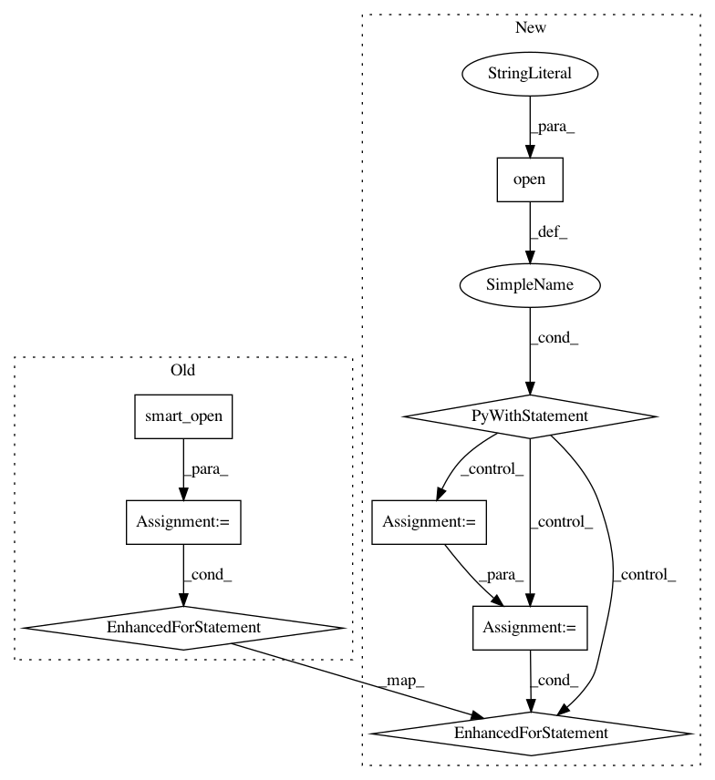

27bbb7015dc6bbe02e00bb1853e7952ac13e7fe0,gensim/models/word2vec.py,BrownCorpus,__iter__,#BrownCorpus#,1352
Before Change
fname = os.path.join(self.dirname, fname)
if not os.path.isfile(fname):
continue
for line in utils.smart_open(fname):
line = utils.to_unicode(line)
// each file line is a single sentence in the Brown corpus
// each token is WORD/POS_TAG
token_tags = [t.split("/") for t in line.split() if len(t.split("/")) == 2]
// ignore words with non-alphabetic tags like ",", "!" etc (punctuation, weird stuff)
words = ["%s/%s" % (token.lower(), tag[:2]) for token, tag in token_tags if tag[:2].isalpha()]
if not words: // don"t bother sending out empty sentences
continue
yield words
class Text8Corpus(object):
Iterate over sentences from the "text8" corpus, unzipped from http://mattmahoney.net/dc/text8.zip.
def __init__(self, fname, max_sentence_length=MAX_WORDS_IN_BATCH):
self.fname = fname
After Change
fname = os.path.join(self.dirname, fname)
if not os.path.isfile(fname):
continue
with utils.open(fname, "rb") as fin:
for line in fin:
line = utils.to_unicode(line)
// each file line is a single sentence in the Brown corpus
// each token is WORD/POS_TAG
token_tags = [t.split("/") for t in line.split() if len(t.split("/")) == 2]
// ignore words with non-alphabetic tags like ",", "!" etc (punctuation, weird stuff)
words = ["%s/%s" % (token.lower(), tag[:2]) for token, tag in token_tags if tag[:2].isalpha()]
if not words: // don"t bother sending out empty sentences
continue
yield words
class Text8Corpus(object):
Iterate over sentences from the "text8" corpus, unzipped from http://mattmahoney.net/dc/text8.zip.
def __init__(self, fname, max_sentence_length=MAX_WORDS_IN_BATCH):
self.fname = fname
In pattern: SUPERPATTERN
Frequency: 3
Non-data size: 8
Instances
Project Name: RaRe-Technologies/gensim
Commit Name: 27bbb7015dc6bbe02e00bb1853e7952ac13e7fe0
Time: 2019-07-07
Author: itay.bittan@gmail.com
File Name: gensim/models/word2vec.py
Class Name: BrownCorpus
Method Name: __iter__
Project Name: RaRe-Technologies/gensim
Commit Name: 27bbb7015dc6bbe02e00bb1853e7952ac13e7fe0
Time: 2019-07-07
Author: itay.bittan@gmail.com
File Name: gensim/models/deprecated/word2vec.py
Class Name: BrownCorpus
Method Name: __iter__
Project Name: RaRe-Technologies/gensim
Commit Name: 27bbb7015dc6bbe02e00bb1853e7952ac13e7fe0
Time: 2019-07-07
Author: itay.bittan@gmail.com
File Name: gensim/models/deprecated/keyedvectors.py
Class Name: EuclideanKeyedVectors
Method Name: accuracy